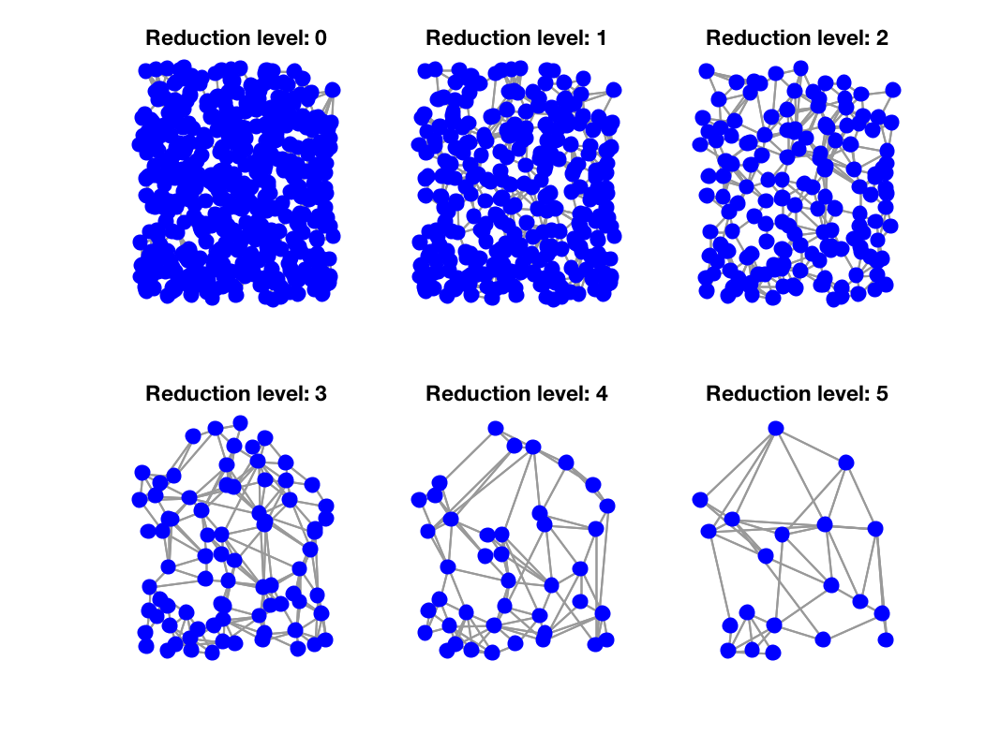

[Gs]=gsp_graph_multiresolution(G,num_levels); [Gs]=gsp_graph_multiresolution(G,num_levels,param);
| G | Graph structure |
| num_levels | Number of times to downsample and coarsen the graph |
| param | Optional structure of parameters |
| Gs | Cell array of graphs |
'gsp_graph_multiresolution(G,num_levels)' computes a multiresolution of graph by repeatedly downsampling and performing graph reduction. The default downsampling method is the largest eigenvector method based on the polarity of the components of the eigenvector associated with the largest graph Laplacian eigenvalue. The default graph reduction method is Kron reduction followed by a graph sparsification step. param is a structure of optional parameters containing the following fields:
Example:
N = 500;
G = gsp_sensor(N);
Nlevel = 5;
Gs = gsp_graph_multiresolution(G, Nlevel);
figure;
for ii = 1:numel(Gs)
subplot(2,3,ii)
gsp_plot_graph(Gs{ii})
title(['Reduction level: ', num2str(ii-1)]);
end

Demo: gsp_demo_pyramid
Authors : David I Shuman, Elle Weeks, Andre Archer, Stefan Faridani, Yan Jin, Nathanael Perraudin. Date: 26 November 2015 Testing: test_operators
D. I. Shuman, M. J. Faraji, and P. Vandergheynst. A framework for multiscale transforms on graphs. arXiv preprint arXiv:1308.4942, 2013.